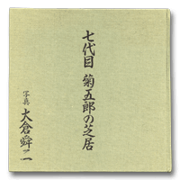

Books for Becoming Better Acquainted with Otowaya
Index > Ohkura Shinji, Shichidaime Kikugoro no Shibai (The Theatre of Kikugoro VII)
Ohkura Shinji, Shichidaime Kikugoro no Shibai (The Theatre of Kikugoro VII)
Heibonsha, 1989A Lavish Collection of Photographs Tracing the Stage Performances of Kikugoro VII
This is a lavish collection of stage photographs of the present Kikugoro taken by Ohkura Shinji and published in 1989, the year marking the fortieth anniversary of the Kikugoro troupe. It consists of a total of 199 photographs taken over a period of around four and a half years between 1983 and 1988 depicting 56 works and 66 roles, with commentaries provided to each of the works by Watanabe Tamotsu. Four and a half years is by no means a short time for either a photographer or an actor being photographed. Looking at the photographs, one is astonished to realise once again how Kabuki actors are obliged to undertake such a large number of roles within such a short space of time.
One of the features of this collection of photographs is that it includes absolutely no snap shots depicting the actor in the raw, but focuses exclusively on his stage persona. Photographs of roles that Kikugoro played for the first time during the photography period are likely to be of particular interest to people who have seen him give the second or third performances of these same roles. The anthology also includes photographs of new Kabuki works that have not been performed again since, and the viewer can thus look back fondly on these now forgotten. An important attraction of this photographic anthology is the way in which it follows up on Kikugoro's activities over this period.
From the standpoint of an actor, Kikugoro himself said that he felt exhausted and overawed when confronted by such an enormous number of photographs, but it is wonderful to be able to see photographs of Ushinosuke (the current Kikunosuke) appearing on stage for the first time in February 1984 in a performance of Ehon Ushiwakamaru, the first performances of the role of Masaoka in the play Meiboku Sendai Hagi in October 1985 and of the role of Igami no Gonta in Yoshitsune Senbon Zakura in June 1986 and other such roles of seminal importance for Kikugoro himself, along with photographs of Kikugoro in new Kabuki works that have not been revived such as Henge Dojoji and in the role of Tamamo-no-mae in Tamamo no Mae Kumoi no Hareginu.
It goes without saying that there are also many photographs of Kikugoro in the roles in which he excels. These include many well known to modern audiences such as Benten Kozo in Aoto Zoshi Hana no Nishikie, Kataoka Naojiro in Kumo ni Magou Ueno no Hatsuhana, and Yayoi and the lion spirit in Kagami-jishi. There are also photographs of Kikugoro in such roles as Togashi and Yoshitsune in Kanjincho (The Subscription List), Agemaki and the wine-vendor in Sukeroku, O-Tomi and Yozaburo in Yowa Nasake Ukina no Yokogushi, and Enya Hangan, Hayano Kanpei and O-Karu in Kanadehon Chushingura. These are all major roles that Kikugoro has played many times, displaying his versatility as epitomised by the expression kaneru.
Another major attraction of this photographic anthology is that it provides a visual record of Kikugoro playing two or more roles in the same play.
| ↑ TOP |
Copyright © Otowaya All Rights Reserved.